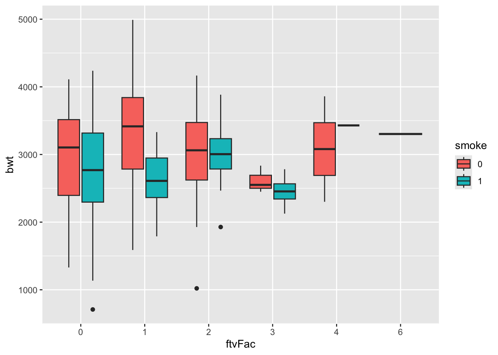
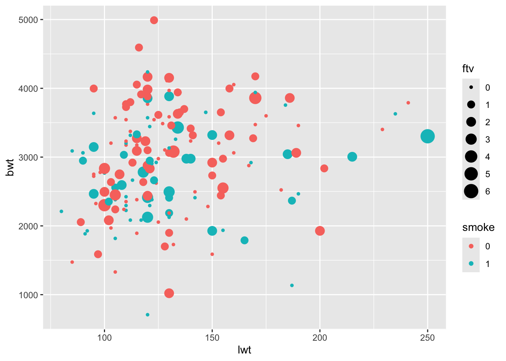
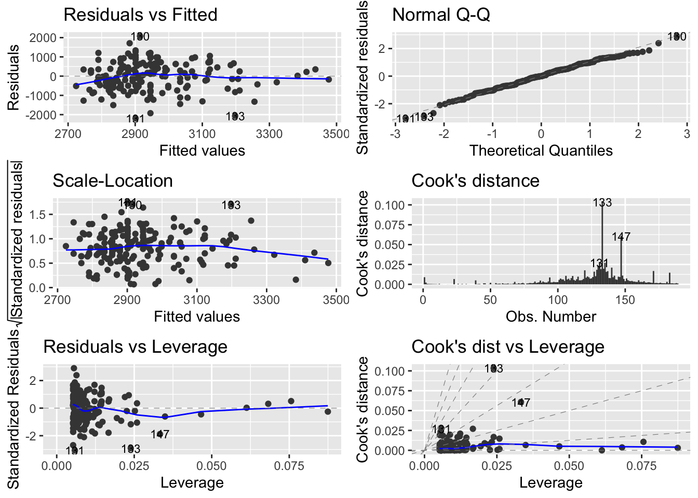
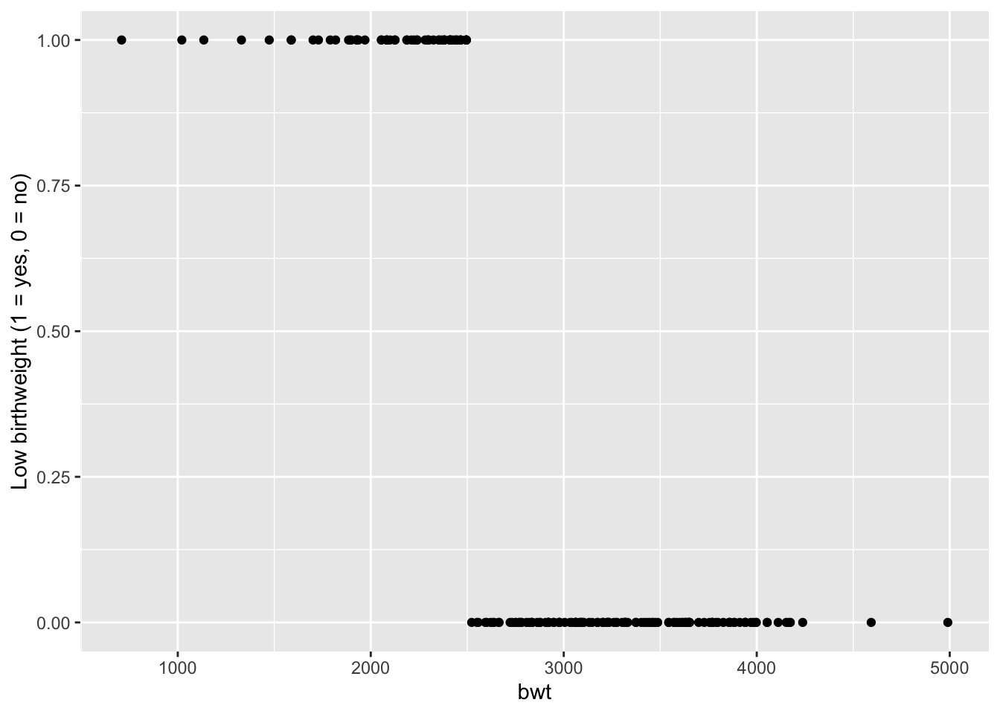
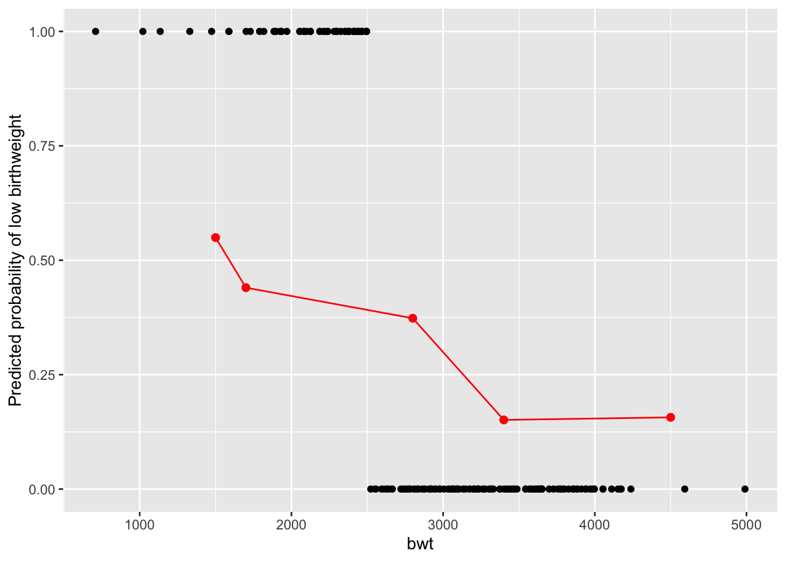

library(tidyverse)
library(ggfortify)Exercise 4: Applied Statistics in R - Solutions
This exercise focuses on Gaussian linear models, where data points are assumed to be independent, normally distributed, and have equal variance. Such models are fitted in R using lm(), e.g.
Later sections also introduce logistic regression (for binary outcomes) and linear mixed models (for grouped or hierarchical data).
The purpose of this exercise is to show how to fit and work with statistical models in R. This means that the analyses are not necessarily those that should be used in a real-life analysis of the data.
Start with the Data part.
Data and Packages
The dataset to be used concerns risk factors for low infant birth weight and is available in the MASS package. It includes 189 births with the following variables:
- Use the commands below to load the MASS package and get the help page for the data. The help page will appear in the lower right window of RStudio. Read about the data; in particular about the variables
age,lwt,ftv,smoke, andbwt.
library(MASS)
data(birthwt) # Calls the data frame called birthwt (Promise)
head(birthwt) # Loads the data in Environment and shows the head low age lwt race smoke ptl ht ui ftv bwt
85 0 19 182 2 0 0 0 1 0 2523
86 0 33 155 3 0 0 0 0 3 2551
87 0 20 105 1 1 0 0 0 1 2557
88 0 21 108 1 1 0 0 1 2 2594
89 0 18 107 1 1 0 0 1 0 2600
91 0 21 124 3 0 0 0 0 0 2622?birthwt # Opens Help page for birthwt data-
birthwtis not a tibble (the modern tidyverse data format). Convert it to a tibble.
library(tidyverse)
birthData <- as_tibble(birthwt)
birthData# A tibble: 189 × 10
low age lwt race smoke ptl ht ui ftv bwt
<int> <int> <int> <int> <int> <int> <int> <int> <int> <int>
1 0 19 182 2 0 0 0 1 0 2523
2 0 33 155 3 0 0 0 0 3 2551
3 0 20 105 1 1 0 0 0 1 2557
4 0 21 108 1 1 0 0 1 2 2594
5 0 18 107 1 1 0 0 1 0 2600
6 0 21 124 3 0 0 0 0 0 2622
7 0 22 118 1 0 0 0 0 1 2637
8 0 17 103 3 0 0 0 0 1 2637
9 0 29 123 1 1 0 0 0 1 2663
10 0 26 113 1 1 0 0 0 0 2665
# ℹ 179 more rows- The variables
smoke(mother’s smoking habits) andftv(number of first-trimester physician visits) are coded as numeric variables.
Convert them to factors so they are treated as categorical variables in your analyses:
birthData <- birthData %>%
mutate(
smoke = factor(smoke),
ftvFac = factor(ftv)
)- Make boxplot of birth weight
bwtaccording the number of visits to physicianftvFacduring the first trimester. Split by smoking status.
ggplot(birthData, aes(x=ftvFac, y=bwt, fill = smoke)) +
geom_boxplot() 
- Make a scatterplot with
lwton the \(x\)-axis andbwton the \(y\)-axis. Modify the plot such that points are colored according tosmokeand size showsftv.
ggplot(birthData, aes(x=lwt, y=bwt, col=smoke, size = ftv)) +
geom_point() 
- The
ftvis a numerical variable, but we would also like a categorical version of it calledvisits, with groups corresponding to zero visits, one visit, and two or more visits, respectively.
Hint
Use mutate and take a look at fct_collapse function.
table(birthData$ftv)
0 1 2 3 4 6
100 47 30 7 4 1 birthData <- mutate(birthData,
visits = fct_collapse(ftvFac,
Never="0",
Once="1",
other_level="MoreThanOnce"))
table(birthData$visits)
Never Once MoreThanOnce
100 47 42 Report how many women had more than one physician visit during the first trimester here.

Regression
The term regression is usually used for models where all explanatory variables are numerical.
If you are not too familiar with linear regression, you can have a look at what the summary() output means here and for understanding regression plot(), have a look here.
- Fit a linear regression model with
bwtas response andlwtas covariate, and identify the estimates for the intercept and for the slope. Find the 97.5% confidence interval for the slope parameter by using theconfint()function.
library(ggplot2)
reg1 <- lm(bwt ~ lwt, data=birthData)
summary(reg1)
Call:
lm(formula = bwt ~ lwt, data = birthData)
Residuals:
Min 1Q Median 3Q Max
-2192.12 -497.97 -3.84 508.32 2075.60
Coefficients:
Estimate Std. Error t value Pr(>|t|)
(Intercept) 2369.624 228.493 10.371 <2e-16 ***
lwt 4.429 1.713 2.585 0.0105 *
---
Signif. codes: 0 '***' 0.001 '**' 0.01 '*' 0.05 '.' 0.1 ' ' 1
Residual standard error: 718.4 on 187 degrees of freedom
Multiple R-squared: 0.0345, Adjusted R-squared: 0.02933
F-statistic: 6.681 on 1 and 187 DF, p-value: 0.0105confint(reg1) 2.5 % 97.5 %
(Intercept) 1918.867879 2820.37916
lwt 1.048845 7.80937- Perform model validation. Hint: use autoplot. Does the model seem appropriate for the data?
#par(mfrow=c(2,2))
#plot(reg1)
autoplot(reg1, which = 1:6, ncol = 2, label.size = 3)
- Fit the multiple linear regression model where you include
lwtas well asageandftv(numerical variables) as covariates. Identify the parameter estimates, and consider what their interpretation is.
reg2 <- lm(bwt ~ lwt + age + ftv, data=birthData)
summary(reg2)
Call:
lm(formula = bwt ~ lwt + age + ftv, data = birthData)
Residuals:
Min 1Q Median 3Q Max
-2218.60 -488.73 11.56 516.63 1907.42
Coefficients:
Estimate Std. Error t value Pr(>|t|)
(Intercept) 2223.506 301.567 7.373 5.4e-12 ***
lwt 4.121 1.758 2.344 0.0201 *
age 7.486 10.285 0.728 0.4676
ftv 15.364 51.114 0.301 0.7641
---
Signif. codes: 0 '***' 0.001 '**' 0.01 '*' 0.05 '.' 0.1 ' ' 1
Residual standard error: 720.9 on 185 degrees of freedom
Multiple R-squared: 0.03831, Adjusted R-squared: 0.02271
F-statistic: 2.457 on 3 and 185 DF, p-value: 0.06446# Just to view the coefficients
summary(reg2)$coefficients Estimate Std. Error t value Pr(>|t|)
(Intercept) 2223.505618 301.567140 7.3731694 5.402210e-12
lwt 4.120744 1.757787 2.3442798 2.012498e-02
age 7.485748 10.285178 0.7278189 4.676446e-01
ftv 15.363944 51.113921 0.3005824 7.640705e-01- Fit the multiple linear regression model again, but now only using data from mothers with a weight less than 160 pounds (
lwt< 160). Hint: Use thefilterfunction and change thedataargument in thelmcommand.
### Use only data from mothers with weight below 160
reg3 <- lm(bwt ~ lwt + age + ftv, data=filter(birthData, lwt<160))
summary(reg3)
Call:
lm(formula = bwt ~ lwt + age + ftv, data = filter(birthData,
lwt < 160))
Residuals:
Min 1Q Median 3Q Max
-2233.9 -487.0 25.7 476.2 1852.5
Coefficients:
Estimate Std. Error t value Pr(>|t|)
(Intercept) 1824.063 444.508 4.104 6.52e-05 ***
lwt 7.182 3.342 2.149 0.0332 *
age 9.179 11.624 0.790 0.4310
ftv 16.986 60.012 0.283 0.7775
---
Signif. codes: 0 '***' 0.001 '**' 0.01 '*' 0.05 '.' 0.1 ' ' 1
Residual standard error: 716.3 on 157 degrees of freedom
Multiple R-squared: 0.03956, Adjusted R-squared: 0.0212
F-statistic: 2.155 on 3 and 157 DF, p-value: 0.09549 # Just to view the coefficients
summary(reg3)$coefficients Estimate Std. Error t value Pr(>|t|)
(Intercept) 1824.063262 444.508301 4.1035528 0.0000651941
lwt 7.182184 3.341787 2.1492047 0.0331503757
age 9.178577 11.624301 0.7896024 0.4309508695
ftv 16.986307 60.011783 0.2830495 0.7775117320ANOVA
The term analysis of variance (ANOVA) is used for models where all explanatory variables are categorical (factors). Before proceeding, make sure that smoke is coded as a factor.
- Fit a one-way ANOVA (using
lm()) where the mean birth weight is allowed to differ between smokers and non-smokers. Find the estimated birth weight for infants from smokers as well as non-smokers. Hint: useemmeans().
library(emmeans)
oneway1 <- lm(bwt ~ smoke, data=birthData)
emmeans(oneway1,~smoke) smoke emmean SE df lower.CL upper.CL
0 3056 66.9 187 2924 3188
1 2772 83.4 187 2607 2937
Confidence level used: 0.95 - Check, is there a statistically significant difference in mean birth weight between infants of smokers and non-smokers?
pairs(emmeans(oneway1,~smoke)) contrast estimate SE df t.ratio p.value
smoke0 - smoke1 284 107 187 2.653 0.0087- Fit the oneway ANOVA where you use
visitsas the explanatory variable. Perform an overall F-test for differences across all levels. Find the estimated birth weight for each group, and make the pairwise comparisons between the groups.
Hintdrop1(, test="F"). What do you conclude about the relationship between the number of visits and infant birth weight?
oneway2 <- lm(bwt ~ visits, data=birthData)
emmeans(oneway2,~visits) visits emmean SE df lower.CL upper.CL
Never 2865 72.6 186 2722 3008
Once 3108 106.0 186 2899 3317
MoreThanOnce 2951 112.0 186 2730 3172
Confidence level used: 0.95 drop1(oneway2,test="F")Single term deletions
Model:
bwt ~ visits
Df Sum of Sq RSS AIC F value Pr(>F)
<none> 98081730 2493.2
visits 2 1887925 99969656 2492.8 1.7901 0.1698pairs(emmeans(oneway2,~visits)) contrast estimate SE df t.ratio p.value
Never - Once -242.9 128 186 -1.891 0.1441
Never - MoreThanOnce -85.7 134 186 -0.642 0.7970
Once - MoreThanOnce 157.1 154 186 1.019 0.5658
P value adjustment: tukey method for comparing a family of 3 estimates - Now, consider both
visitsandsmokeas explanatory variables.
Since both are categorical, the relevant model is a two-way ANOVA. Fit the model without interaction. Inspect the estimated means and group differences. How do you interpret the estimated means? What do they tell you about birth weight by smoking status and visit frequency?
twoway1 <- lm(bwt ~ visits + smoke, data=birthData)
emmeans(twoway1,~visits+smoke) visits smoke emmean SE df lower.CL upper.CL
Never 0 2981 86.7 185 2810 3152
Once 0 3174 108.0 185 2960 3387
MoreThanOnce 0 3055 119.0 185 2820 3290
Never 1 2724 93.3 185 2540 2908
Once 1 2916 132.0 185 2656 3177
MoreThanOnce 1 2798 128.0 185 2545 3050
Confidence level used: 0.95 pairs(emmeans(twoway1,~visits+smoke)) contrast estimate SE df t.ratio p.value
Never smoke0 - Once smoke0 -192.8 129 185 -1.499 0.6653
Never smoke0 - MoreThanOnce smoke0 -74.1 132 185 -0.561 0.9933
Never smoke0 - Never smoke1 257.3 108 185 2.374 0.1709
Never smoke0 - Once smoke1 64.5 181 185 0.356 0.9992
Never smoke0 - MoreThanOnce smoke1 183.2 174 185 1.054 0.8988
Once smoke0 - MoreThanOnce smoke0 118.7 153 185 0.775 0.9715
Once smoke0 - Never smoke1 450.1 154 185 2.923 0.0444
Once smoke0 - Once smoke1 257.3 108 185 2.374 0.1709
Once smoke0 - MoreThanOnce smoke1 376.0 178 185 2.112 0.2858
MoreThanOnce smoke0 - Never smoke1 331.4 168 185 1.977 0.3596
MoreThanOnce smoke0 - Once smoke1 138.6 197 185 0.704 0.9812
MoreThanOnce smoke0 - MoreThanOnce smoke1 257.3 108 185 2.374 0.1709
Never smoke1 - Once smoke1 -192.8 129 185 -1.499 0.6653
Never smoke1 - MoreThanOnce smoke1 -74.1 132 185 -0.561 0.9933
Once smoke1 - MoreThanOnce smoke1 118.7 153 185 0.775 0.9715
P value adjustment: tukey method for comparing a family of 6 estimates - Fit the twoway ANOVA model with interaction replacing
+by a*. Usedrop1()to test whether the interaction term is statistically significant. Compare it to model without interaction? What do the p-values suggest about whether the effect of smoking depends on the number of visits?
twoway2 <- lm(bwt ~ visits * smoke, data=birthData)
drop1(twoway2,test="F")Single term deletions
Model:
bwt ~ visits * smoke
Df Sum of Sq RSS AIC F value Pr(>F)
<none> 93189162 2489.5
visits:smoke 2 1992934 95182096 2489.5 1.9568 0.1443drop1(twoway1,test="F")Single term deletions
Model:
bwt ~ visits + smoke
Df Sum of Sq RSS AIC F value Pr(>F)
<none> 95182096 2489.5
visits 2 1161614 96343710 2487.8 1.1289 0.32561
smoke 1 2899635 98081730 2493.2 5.6359 0.01862 *
---
Signif. codes: 0 '***' 0.001 '**' 0.01 '*' 0.05 '.' 0.1 ' ' 1- Use
anova()to formally compare the two models. Are the two models statistically different?
What does this imply about including the interaction term?
anova(twoway1, twoway2)Analysis of Variance Table
Model 1: bwt ~ visits + smoke
Model 2: bwt ~ visits * smoke
Res.Df RSS Df Sum of Sq F Pr(>F)
1 185 95182096
2 183 93189162 2 1992934 1.9568 0.1443- Report are the 2 models statistically different here.
Optional section
Logistic regression
- The variable
lowis 1 if birth weight is less than 2500 g, and 0 otherwise.
Visualize the data:
ggplot(birthData, aes(x=bwt, y=low)) +
geom_point() +
labs(y = "Low birthweight (1 = yes, 0 = no)")
Imagine the actual birth weight bwt was not recorded, but we still want to know whether the birth weight was low.
Because the outcome is binary (low has two values), we use logistic regression to model the probability.
For example, we may consider a model with mothers’s weight, smoking status, and age as predictors, just like in the previous question.
- Fit the model, take a look at
glmfunction:
logreg1 <- glm(low ~ lwt + smoke + age,
data=birthData, family="binomial")
logreg1
Call: glm(formula = low ~ lwt + smoke + age, family = "binomial", data = birthData)
Coefficients:
(Intercept) lwt smoke1 age
1.36823 -0.01214 0.67076 -0.03899
Degrees of Freedom: 188 Total (i.e. Null); 185 Residual
Null Deviance: 234.7
Residual Deviance: 222.9 AIC: 230.9Use
drop1()to check if each predictor contributes significantly:A Note:
test = "F"is for Gaussian linear models (lm()), where F-tests are appropriate.
For logistic regression and other GLMs,test = "Chisq"is the correct choice.
drop1(logreg1, test="Chisq")Single term deletions
Model:
low ~ lwt + smoke + age
Df Deviance AIC LRT Pr(>Chi)
<none> 222.88 230.88
lwt 1 227.28 233.28 4.3969 0.03600 *
smoke 1 227.12 233.12 4.2440 0.03939 *
age 1 224.34 230.34 1.4613 0.22672
---
Signif. codes: 0 '***' 0.001 '**' 0.01 '*' 0.05 '.' 0.1 ' ' 1**Question:** Based on the p-values, is there evidence that **smoking** affects the probability of low birth weight?- The fitted model may be used to predict the outcome for new values. The new values are provided in a
newDatadata frame with the same names as the covariate in the model.
# new data
newData <- tibble(
low = rep(NA, 5),
age = c(22, 30, 18, 17, 28),
lwt = c(140, 155, 130, 97, 165),
race = c("Black", "Other", "Black", "Other", "White"),
smoke = as.factor(c(1, 0, 1, 1, 0)),
ptl = c(1, 0, 0, 0, 0),
ftv = c(1, 3, 0, 0, 2),
bwt = c(2800, 4500, 1700, 1500, 3400)
)- We have data for 5 new mothers. Use your fitted logistic model
logreg1to predict the probability of low birthweight and fill thelowcolumn. Use thepredict()function to compute the predicted probabilities for the new cases. Make sure to settype="response"to get probabilities rather than log-odds.
newData$low <- predict(logreg1,
newdata = newData,
type = "response")- Add the predicted probabilities (red points) and a connecting line to your
ggplot. Hint: add geom_point and geom_line with the newData.
ggplot(birthData, aes(x=bwt, y=low)) +
geom_point() +
geom_point(data = newData, aes(x = bwt, y = low), color = "red", size = 2) +
geom_line(data = newData, aes(x = bwt, y = low), color = "red", size = 0.5) +
labs(y = "Predicted probability of low birthweight")
Report here - In how many of the new cases is birthweight predicted to be low??